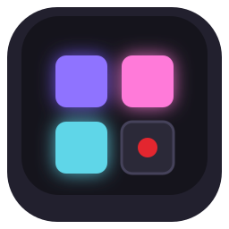

Every project, open by default.
11 projects across data, games, hardware and tools. Each one gets a free version under jebyLabs, and where it makes sense, a supported paid version through JA Insights. Open any row for the details.
Data and analytics · 4
jRjREPrototype · v0.4Miami real-estate analytics where every number shows its source.
A property database for Miami Springs and Virginia Gardens built around each lot's full history: owners, sales, features and valuations over time, with a review queue for records that look wrong.
Schema, app scaffold, synthetic-data generator, review workflow and data-intake framework
Curated South Florida data, valuation and comparable-homes engines, market scores, advisory
FFraudOpen source · 164 testsAn investigation workbench: fraud-analytics courses, 26 resolved cases and a case-file game.
Five courses across Python, R, Power BI and Excel, a library of 26 resolved real cases, a four-case investigation game and a public-data intake desk, all on the Python standard library.
Courses, case library, the game and all original data (GPL-3.0 and CC0)
A hosted investigator workspace, and team training through JA Insights
σGalaxy-cluster massesResearch · activeWeighing galaxy clusters by how their galaxies move, revisited ten years on.
The 2015 Carnegie Mellon poster, rebuilt as an animated slideshow, and a new public repository for the follow-up work.
Everything: code, figures and data cards
No paid version planned
CCell-count pipelineCase studyCSV to a normalized database to a dashboard, in one command.
Loads 52,500 measurements from 10,500 samples into a normalized SQLite schema, then summarizes them in tables, plots and a Streamlit dashboard. Written as a take-home exercise.
Shared on request
No paid version planned
Games and music · 1
 MusicalGamesWorking buildA full-band rhythm game with karaoke, real guitars and keyboards, and charts made from any audio.
MusicalGamesWorking buildA full-band rhythm game with karaoke, real guitars and keyboards, and charts made from any audio.
One app for full-band rhythm games, karaoke with pitch scoring, a Guitar Room for real instruments, and a party mode where friends add songs by scanning a QR code. Working title.
The app, chart generation from your own audio, karaoke and party mode
A one-time purchase, with an optional subscription for updates and new features
Hardware · 1
Plantriloquistv0.1 · bench hardwareA Raspberry Pi hidden in a plant pot that listens, and roasts your friends in English or Spanish.
A provider-neutral talking-character engine: speech recognition, a comedy engine and neural voices, with a simulator and a control panel. First character: Potty Mouth.
Character engine, simulator, control panel and the offline voice path
Character and voice packs, hosted AI responses, a ready-made hardware kit
Tools and software · 5
DeskMockup · build startingTickets that can't close without proof, and every fix leaves a lesson behind.
One ticketing system for every project, personal and professional. Tickets are Markdown files in git. Done means evidence, an explicit approval and a lesson, and Drew digs up old lessons when a new problem looks familiar.
The CLI, the Markdown ticket format, the local web app and the lesson library, self-hosted
Hosted sync across machines, AI-agent seats, lessons matched across projects, and proof captured from CI

Lighting Labv0.2 · open sourceKeyboard lighting you can actually design: anchors, backgrounds and reactions, layered.
A keyboard RGB editor with a preset gallery, a physical keyboard preview, live Razer Chroma control and exportable presets. 12 presets, 120 automated checks.
Editor, presets, preview and JSON export (GPL-3.0)
A Windows player, keyboard firmware export and app-based profiles
QQuorumSpecGroup payments where everyone's in, or nobody's charged. Working name.
Each member's card is held for their share, and charged only if enough people commit by the deadline. Nobody fronts the money.
The commitment engine (Apache-2.0)
The hosted app, with a small per-person fee shown up front
AAppForgeIn useAn app that makes apps: every defect becomes a case, a rule and a test.
The method behind how I build with AI coding agents. jRE and Plantriloquist run on it today.
The method and its reusable skills
Setup and coaching for teams, through JA Insights
ȷjeby.usLiveThis site: plain HTML pages, no framework, built in the open.
Static pages generated from one content file, with native page transitions and no tracking.
Everything
No paid version planned